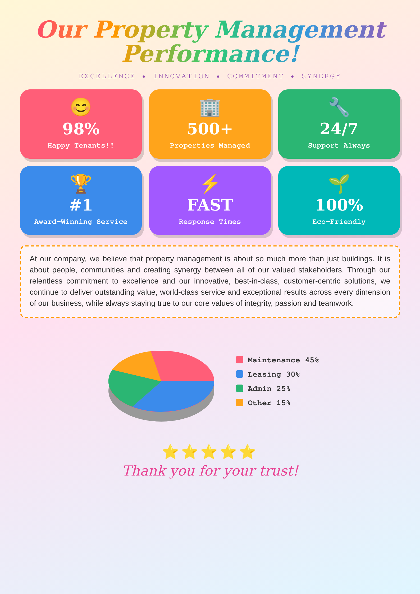
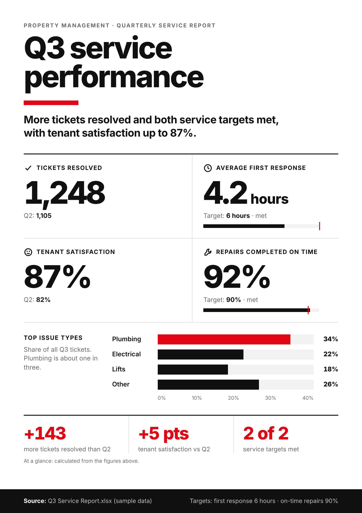

Same request. Two prompts.
Infographic: Q3 property management service performance

AI Sandbox Prompt Vault
✕ Without a proper prompt
"Make an infographic about our property management performance."

- 1Generic title, no key message
- 2Invented figures: 98%, 500+, #1. No data was given, so the AI made them up
- 3A 72-word paragraph nobody will read
- 43D pie chart that adds up to 115%
- 5No source, no takeaway, 3 fonts and too many colours
1
2
3
4
5
✓ With the Prompt Vault
Role Information Designer · Audience Top Management · Tone Data-driven · Style Swiss Design · Format A4 portrait · Data Q3 Service Report.xlsx · + Testing & Quality

- 1Clear title for top management
- 2The key message comes first, in one line
- 3Real figures from your file, with targets
- 4Honest chart on a true 0–40% scale
- 5Only calculated facts, clearly labelled
- 6Source cited, one typeface, one style
1
2
3
4
5
6
Illustrative example with sample data. Left: typical problems when a vague prompt gives the AI nothing to work with. Right: built by following the full Prompt Vault prompt (Infographic › Create Infographic).